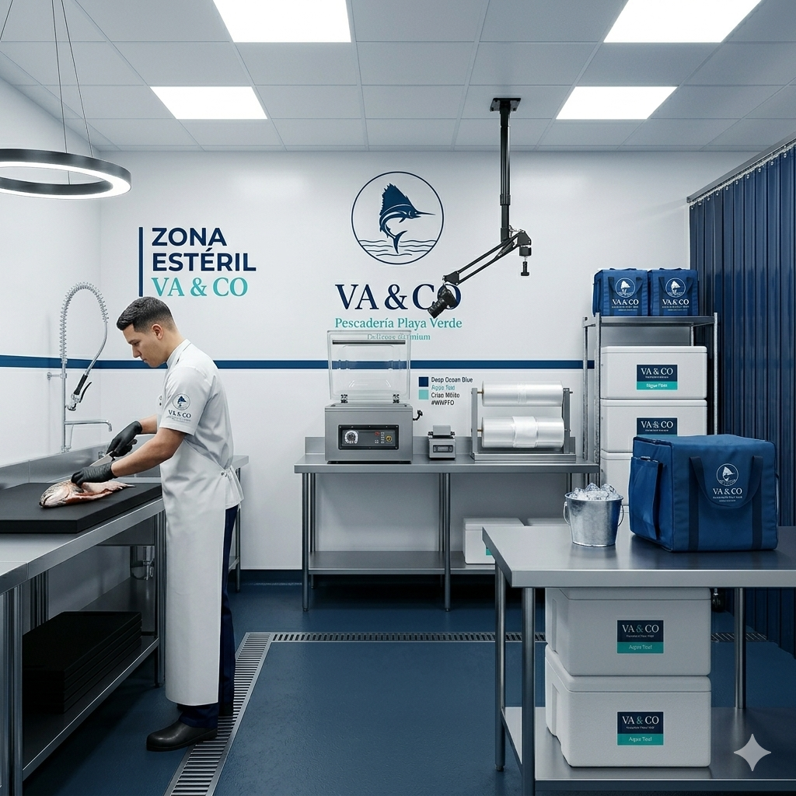

I. Hoja de Ruta Crítica para el Lanzamiento
Cronograma de despliegue coordinado para la transición suave de mostrador a Dark Store.
Fases de Trabajo
Adecuación Física y Maquinaria Tecnológica
Reestructuración del local para albergar la "Zona Estéril" (The Cold Lab). Instalación de mesas de acero inoxidable, bacha profunda y la selladora industrial al vacío. Adquisición del hardware operativo (Edición 4K y Chromebook para el local).
Entregables Clave:
II. Propuesta de Campañas Publicitarias (Tráfico Ads)
Nuestra máquina digital no depende de la suerte; está calibrada para tres audiencias específicas con ganchos de alta conversión.
🛵 Campaña "Primer Delivery Premium Gratis"
Diseñada para romper la barrera de desconfianza al comprar mariscos y pescados de forma digital en Catia La Mar y zonas de alto target. Un video cinematográfico 4K resalta la frescura del producto sobre la tabla negra y ofrece la entrega de cortesía en su primera orden.
👨🍳 Campaña "Kit de Muestras para Alta Cocina"
Prospección dirigida exclusivamente a Chefs Ejecutivos y dueños de restaurantes en La Guaira. Ofrecemos el envío gratuito de 5 Kits de Muestra con lomos de atún o salmón perfectamente curados y sellados al vacío, abriendo un canal de distribución comercial confiable y de alta frecuencia.
🎬 Campaña "Transparencia Total" (Reels 4K)
Videos cortos mostrando los procesos higiénicos del Maestro Pescadero cortando sobre la tabla de HDPE negra, el proceso de sellado, y el protocolo fotográfico enviado por WhatsApp al cliente. Genera confianza, posiciona la marca y alimenta el tráfico orgánico sin presupuesto extra.
Distribución del Presupuesto de Ads (Mes 1)
Presupuesto inicial enfocado en posicionamiento y captación rápida.
Metas Mensuales de Conversión
Nuestra meta en el primer mes de campañas automatizadas busca estabilizar un flujo diario de consultas en el WhatsApp de ventas.
III. Arquitectura de la "Zona Estéril" (The Cold Lab)
Haga clic en las estaciones de la izquierda o en los puntos de interacción de la imagen para inspeccionar la logística de flujo lineal.
Estaciones de Trabajo

Estación 1: Curaduría y Desposte
Esta estación es la "zona cinematográfica" del local. Diseñada con una mesa de acero inoxidable 304 de alta resistencia y una tabla de polietileno de alta densidad (HDPE) de color NEGRO que resalta dramáticamente la coloración roja del atún y el naranja del salmón en los videos y fotos para Instagram.
Transparencia Total de Cara al Cliente
Para romper la barrera de desconfianza de comprar pescado en formato digital, el operario debe enviar obligatoriamente dos capturas desde el brazo fotográfico de la estación:
Foto 1: El lomo crudo limpio sobre la tabla de corte negra de HDPE.
Foto 2: El producto sellado al vacío montado sobre el hielo en la cava blanca con el sticker.
Estándar Quirúrgico
El cliente recibe las fotos en tiempo real antes de que la moto abandone la Dark Store.